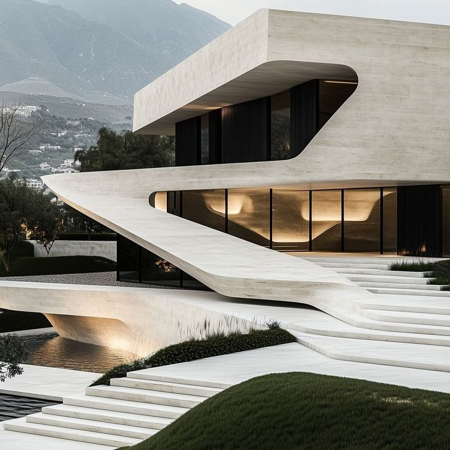
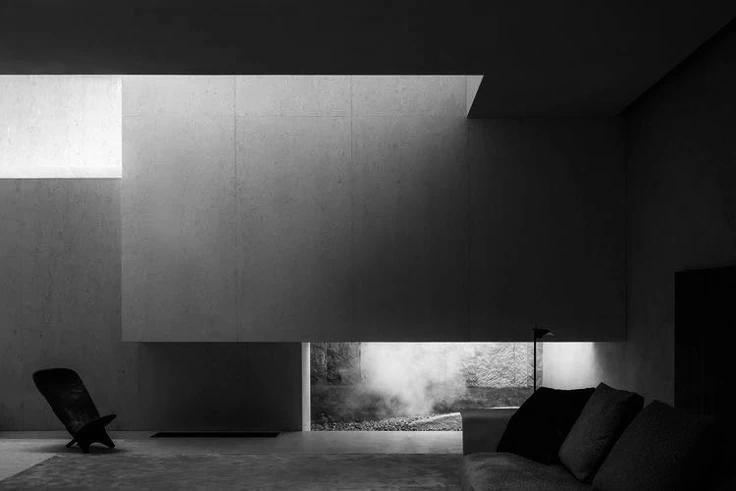
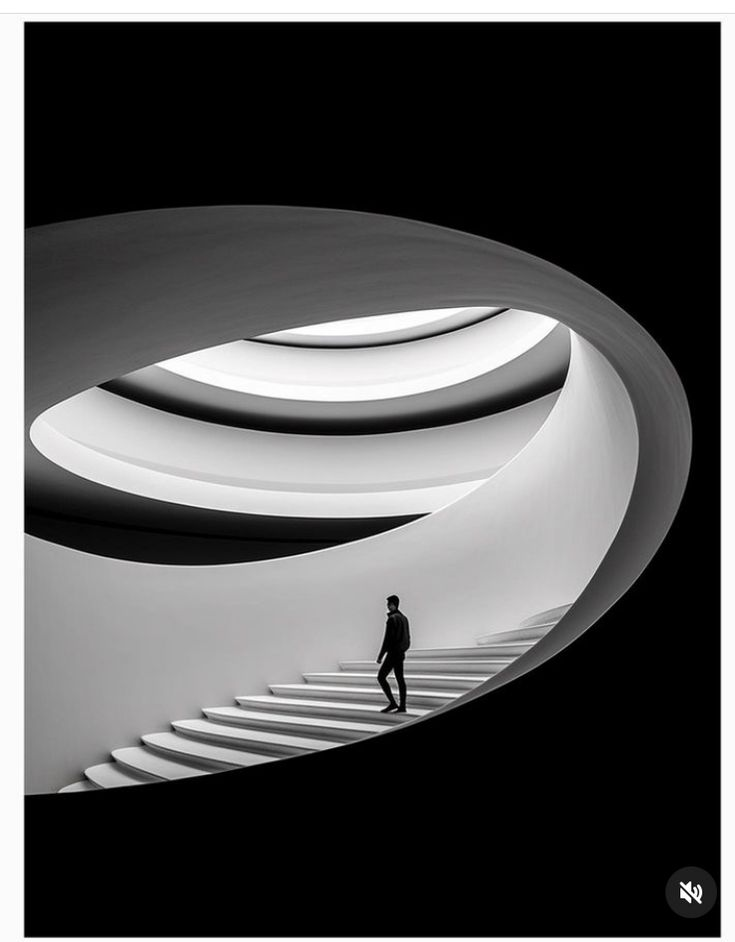
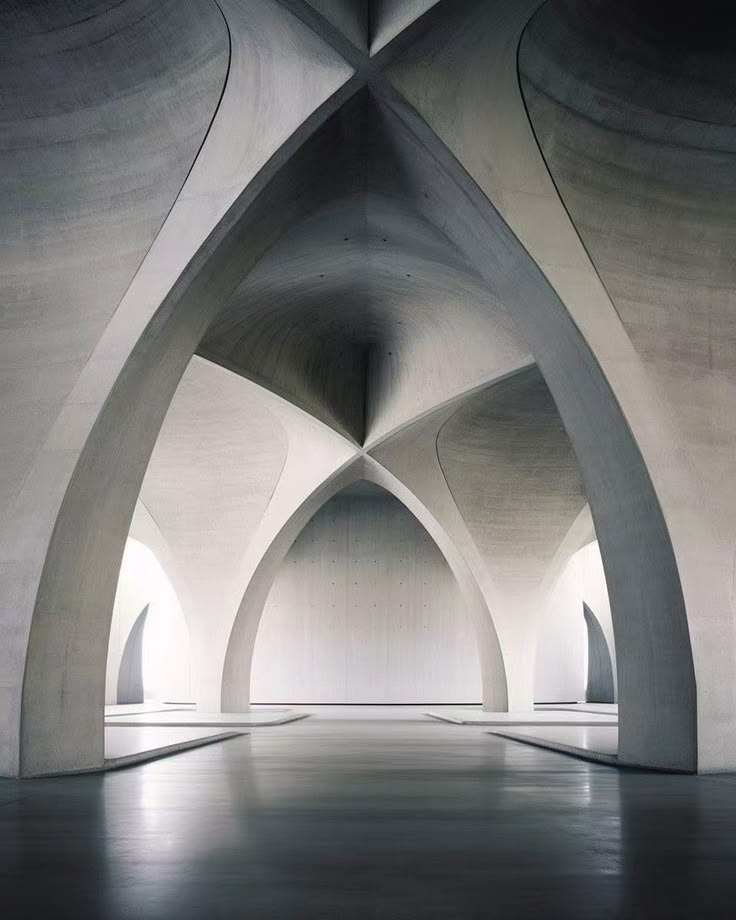

Project Archive
PROJECTS
通过编号、类型、地点与年份组织项目，使作品列表保持清晰的建筑档案感。

01 / residence
Ribbon House
流线混凝土体块沿台阶和水面展开，形成轻盈而安静的住宅入口。

02 / landscape
Forest Deck
木平台嵌入林下庭院，让室内起居与树影、水面相互延伸。

03 / civic
Tidal Pool
洞穴式边界包裹水面和远海，形成安静的海岸休憩场景。

04 / interior
Sculptural Suite
几何开口把海岸光线引入卧室，使休憩空间具有柔和的雕塑感。

05 / interior
Grey Chamber
低窗、暗墙和灰色体块压低声量，突出光线进入室内的方向。

06 / interior
Line Garden
树、苔藓与室内界面并置，形成东方庭院的克制秩序。

07 / civic
Spiral Light
黑白楼梯以曲线引导视线，强化垂直交通的仪式感。

08 / civic
Circular Stair
旋转楼梯形成强烈的图形中心，突出尺度、路径和人的位置。

09 / residence
Vault Hall
拱形结构以重复、明暗和静默的尺度塑造公共空间。